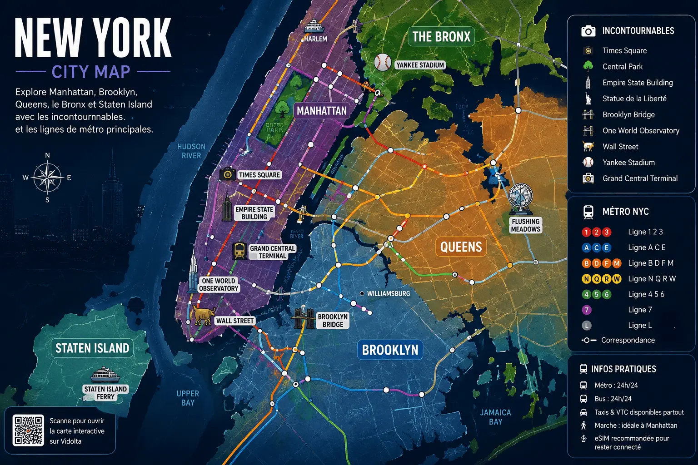
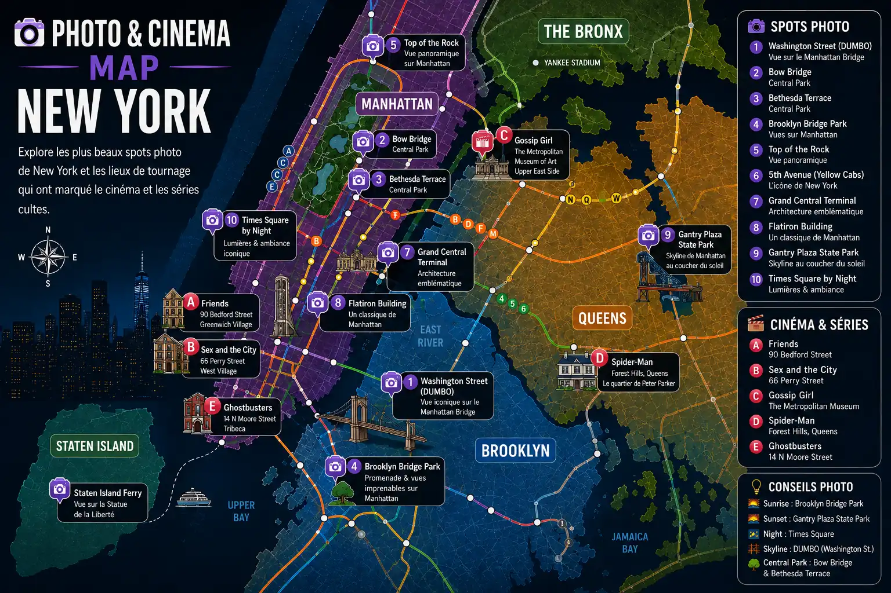

New-York Never Stops
Explore New York entre rooftops mythiques, NBA, Broadway, métro new-yorkais et skyline iconique.
Times Square • NBA • Broadway • Central Park • Manhattan
Le subway new-yorkais permet d’explorer Manhattan et Brooklyn rapidement.
NBA, Yankees, NFL et événements sportifs font partie de l’expérience new-yorkaise.
Découvre les plus belles vues sur Manhattan et les rooftops iconiques.
Spectacles, Times Square et ambiance nocturne unique au monde.

Entre le métro ouvert 24h/24, les célèbres taxis jaunes et les traversées en ferry offrant des vues spectaculaires sur Manhattan, se déplacer à New York fait déjà partie de l'expérience.
Le métro new-yorkais relie Manhattan, Brooklyn, Queens et le Bronx à toute heure. Rapide, économique et emblématique, c'est le moyen le plus efficace pour découvrir New York comme un local.
Explorer →Active ton forfait mobile avant même ton arrivée et profite d'une connexion fiable pour les cartes, réservations et déplacements dans toute la ville.
Explorer →Monter dans un taxi jaune fait partie des images les plus célèbres de New York. Une façon authentique de traverser Manhattan entre gratte-ciels, avenues mythiques et lumières de la ville.
Explorer →De la street food devenue légendaire aux steakhouses historiques, certaines adresses font partie de l'identité de New York autant que ses gratte-ciels ou ses taxis jaunes.
Depuis 1888, cette institution du Lower East Side sert l'un des sandwiches au pastrami les plus célèbres au monde. Une adresse incontournable pour découvrir un morceau de l'histoire culinaire new-yorkaise.
Découvrir →Ouvert à Brooklyn depuis 1887, Peter Luger est l'un des steakhouses les plus mythiques des États-Unis. Son célèbre porterhouse attire habitants, célébrités et visiteurs du monde entier.
Découvrir →Avec son décor historique et son atmosphère unique, Keens est l'une des grandes institutions de Manhattan. Une expérience qui plonge dans le New York d'une autre époque.
Découvrir →Entre monuments emblématiques, spectacles légendaires et panoramas spectaculaires, New York offre certaines des expériences les plus mémorables au monde.
Symbole des États-Unis et de New York, la Statue de la Liberté accueille les visiteurs depuis plus d'un siècle et reste l'une des visites incontournables de la ville.
Découvrir →Entre plateformes suspendues, miroirs spectaculaires et vues à couper le souffle sur Manhattan, le Summit offre l'une des expériences les plus impressionnantes de New York.
Découvrir →Poumon vert de Manhattan, Central Park est l'endroit idéal pour se promener, faire du vélo ou simplement profiter d'une parenthèse nature au cœur des gratte-ciels.
Découvrir →Assister à une comédie musicale à Broadway fait partie des expériences emblématiques de New York et attire chaque année des millions de spectateurs.
Découvrir →Des parquets mythiques de la NBA aux stades légendaires du baseball, New York est l'une des grandes capitales sportives du monde. Assister à un événement sportif ici est une expérience à part entière.
Voir les Knicks jouer dans la salle la plus célèbre du basketball mondial est une expérience incontournable pour les amateurs de sport et de culture américaine.
Voir les billets →Découvre l'ambiance unique du baseball américain au Yankee Stadium, l'un des lieux les plus emblématiques du sport aux États-Unis.
Voir les billets →Les Rangers font vibrer Manhattan chaque saison. Une occasion unique de découvrir l'intensité et la passion du hockey nord-américain.
Découvrir →Chaque été, les plus grands joueurs du monde se retrouvent à New York pour l'un des tournois de tennis les plus prestigieux de la planète.
Découvrir →New York mélange énergie urbaine, diversité culturelle et skyline iconique unique au monde.
Times Square, Central Park, Broadway, Brooklyn et Manhattan offrent des expériences totalement différentes dans une seule ville.
Le subway new-yorkais permet de circuler facilement entre Manhattan, Brooklyn et les autres boroughs.
Pizzerias, rooftops, street food et restaurants premium sont présents dans toute la ville.
Broadway, Central Park, Times Square, NBA et rooftops sont incontournables.
